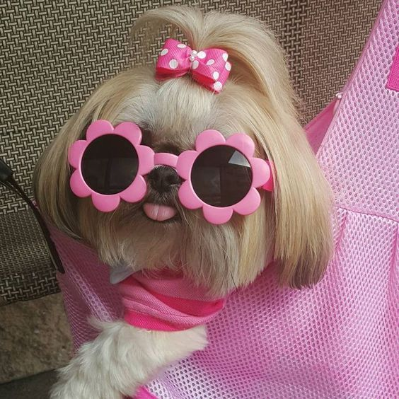

Amber Marie
Student Web Developer 💻

Career Objective
I am a determined and enthusiastic student. Who plans on becoming a web
developer in the futur Being a developer suits my characteristics greatly
since being creative has always been my hobby. I hope to offer strong
problem solving and fresh ideas to the projects I work on.
Employment History
Administrative Assistant - My Local Council
2021 - 2022
- Training on PARIS
- UNIQUS Experience
- Processing and maintaining filing systems
- Assisting with organisation of accounts
- Data Entry via Excel
Clerical Officer - Work Agency Office
2017
- Day-to-Day Clerical duties
- Customer Service
- Supported clients with claims
- Shadowed Appointments
Contact Details
Hobbies